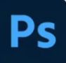
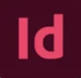
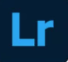
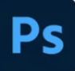
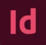
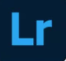

Om mig
Jeg hedder judith hansen og jeg er i gang med uddannelsen som Multimediedesigner på UCL. Jeg er en person som er mega stædige, og når jeg sætter mig noget for, så stopper jeg ikke før at jeg er lykkes med det jeg ville opnå eller at opgaven er løst.
Progrmmer som jeg kan
 





Programmer jeg skal blive bedre til, og er igang med at lærer.